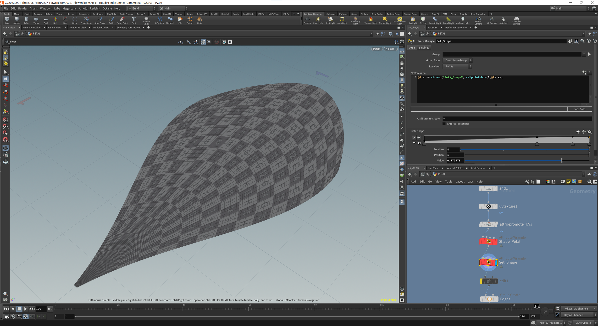
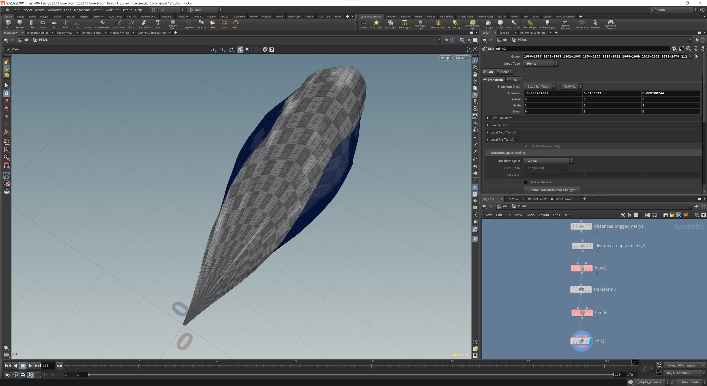
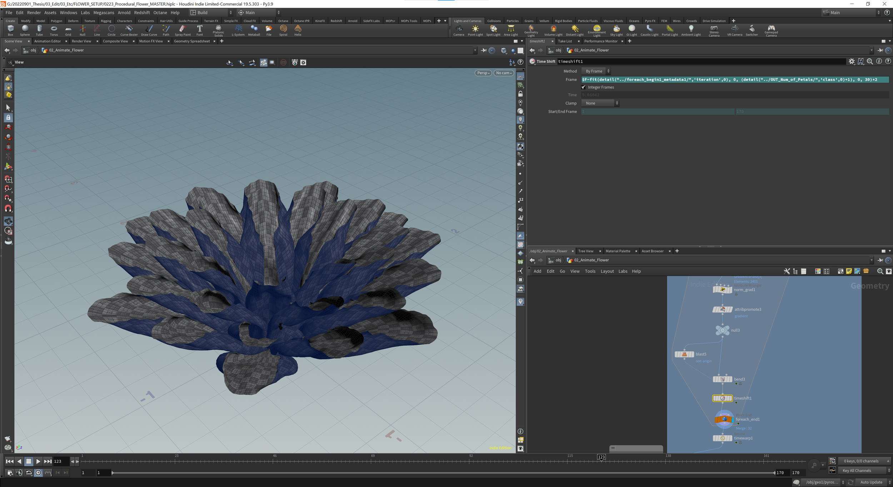
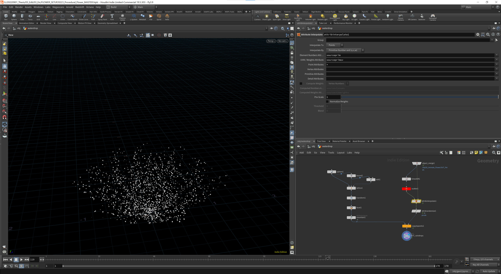

Houdini FX · R&D
Flower R&D
One thing I learned during working in the CG industry — organic stuff is much harder to create than hard-surface. My thesis film has lots and lots of nature, including flowers. So this is how it turned out. Needs some comp adjustments but I'm pretty happy with the result!
And… this is how it started
My first step was to create a single petal from a grid, give it some UVs, noise, and bend on it.


Then I used MOPs to instance petals, and gave it a rotational falloff to create the desired flower shape.

I had to animate the petals to feed them to the Vellum solver. Without the Vellum solving process, the petals would intersect each other.

This is the result of my first Vellum solve! I chose the frame I liked most, time-shifted to it, then made it go through a for-loop that bends each petal over time.


Since I animated the petals, the ugly intersections came back! I time-warped the sequence and ran a second Vellum solve.

Flower Bulb
For the bulb I created a single element first and then for-looped it with some time offset. For the phyllotaxis placement I referenced a tutorial from Junichiro Horikawa — he is awesome!



Water droplets on the surface aren't simulated — they're just spheres with mountain noise. I had a hard time keeping points steady on a deforming mesh, but found a solution using attribute interpolate!
All previous attempts combined